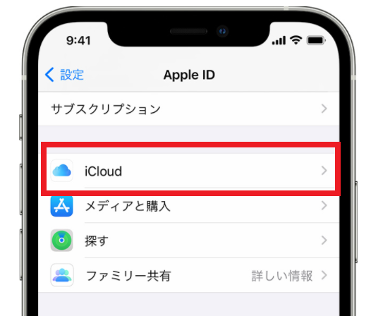

icloudメールはApple社が提供する無料で作れるフリーメールのサービスになります。 GmailやOutlookメールと違って、広告が最初から表示されないのが特徴と言えます。
基本的に、Appleユーザー（iphone、ipad、Mac）であればメールアカウントが作りやすくなっていて、 Appleのデバイスを持つ人のために作られているサービスと言えます。
データ容量は5GB、1通あたり20MBまでのファイルを添付できます。
このページではiphone、Macにおけるicloudメールのメールアドレスの作り方について説明していきます。
icloudメールを作る方法は幾つかありますが、前提条件としてAppleIDを持っていないといけません。
Appleのデバイス（iphoneやipad）を持っていて既にAppleIDを登録している方は、そのIDを使うことも出来ます。
AppleIDを持っていない方は、以下のURLから作りましょう。 AppleID自体は、iphoneやipadを持っていなくとも誰でも作ることが出来ます。
AppleIDの専用ページから登録する方法を説明しましたが、 その他にもIphoneやipadから直接作ったり、専用ソフトをインストールして作る方法もあります。
AppleIDの作り方については、Apple社の「AppleIDの作成方法」で解説されています。
（https://support.apple.com/ja-jp/HT204316）
AppleIDは、iphone・macユーザーにとって、とても重要なIDになります。
APPStoreでアプリをインストールする時、iTuneに入る時、iCloudに入る時、Appleのサポートを受ける時。
いろいろな場面で確認されることになります。
AppleIDを何回も間違えるとロックされてしまいます。 解除することは可能ですが、一旦ロックがかかると別のデバイスで認証メールを確認したりなど、それなりに大変。
忘れてしまわないように、頻繁に使っているメールアドレスを登録するなど、覚えやすくて、わかりやすいAppleIDを作成しましょう。
実際にicloudメールを作成してみましょう。
iphoneで作る方法、macで作る方法、Windowsで作る方法と3種類に分けて解説します。
また、Android（アンドロイド）スマホではicloudメールを作成することが出来ません。 Appleの公式ページでも確認できませんでした。
iphoneでicloudのメールアドレスを作る場合、設定画面に入りメールアドレスを作成することになります。
作成のための順序は以下になります。

「メール」アプリをOFFからONに変更しても、メール生成画面に遷移しない場合は、 既にicloudメールを作っている場合などが原因になります。
icloudメールを作成した後は「メール」アプリか「icloudメール」アプリにメールが届くようになります。
icloudメールの特設ページもあります。 ブラウザ経由で確認する場合は、このリンク先からicloudに入ることも出来ます。
Macでicloudメールを作る場合も、iphoneと同様に設定画面から入って作ることになります。
順序は以下になります。
Windowsのパソコンでも「iTunes for Windows」というicloud環境を構築するソフトをインストールすることで、 icloudメールがWindowsから作成できるようになります。
基本的にはicloudメールを作れるのはAppleデバイスのみになりますが、この方法であればicloudメールを作れます。
WindowsパソコンでiCloudを設定する（Appleサポート）
基本的にicloudメールの作成は、iphoneやMacなどのAppleデバイスから作る仕様になっています。 Windwsの場合は専用ソフトが必要になりますし、アンドロイドスマホからは作ることが出来ません。
icloudメールの作成とは異なり、単純に管理画面に入るだけであればWindows機パソコンでもアンドロイドスマホでも、 簡易的にログインすることが出来ます。
ログイン方法は以下のicloud専用ページから入ることが出来ます。
Outlook以外にもフリーメールサービスは幾つかあります。 それぞれの特徴とアカウント作成するための方法を、次に紹介しているページで解説しています。
| サービス | アドレス | 容量 | 広告表示 |
|---|---|---|---|
| Gmail | 「***@gmail.com」 | 15GB | あり（削除可） |
| outlookメール | 「***@outlook.jp」 | 15GB | あり |
| Yahooメール | 「***@yahoo.co.jp」 | 10GB | あり |

demiglaze
Web制作を始めて約19年になります（HTML/css、Photoshop、Webマーケティング）。2005年から当サイトの運営を開始。 これまでに300個以上のドメインを取得、10社を超えるレンタルサーバーを利用してきました。